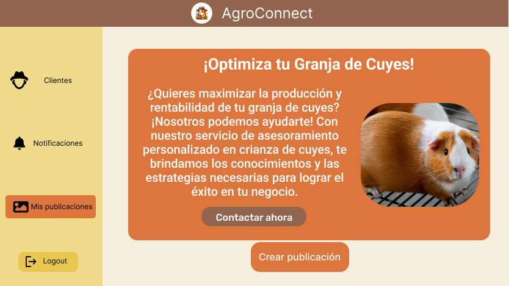
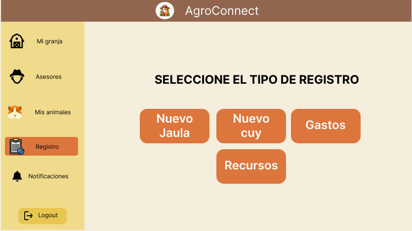
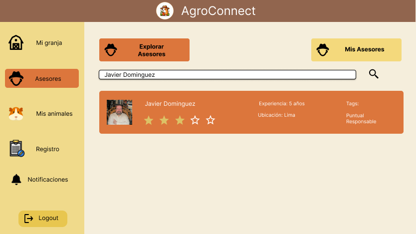

Nuestros Servicios

PUBLICACIÓN DE SERVICIOS
Permite a los usuarios publicar información sobre sus servicios y habilidades para ofrecerlos a otros miembros de la comunidad.
¡Explora más!

GESTIÓN DE CRIADEROS DE CUYES
Ayudamos a los criadores de cuyes proporcionando herramientas y recursos para una gestión eficiente de sus criaderos.
¡Descubre cómo funciona!

RED DE ASESORAMIENTO
Proporcionamos un espacio para recibir y brindar asesoramiento sobre temas relacionados con la agricultura y la ganadería.
¡Empieza hoy!Video About The Product
¡Sumérgete en el mundo de AgroCuy en menos de 40 segundos y déjate impresionar!